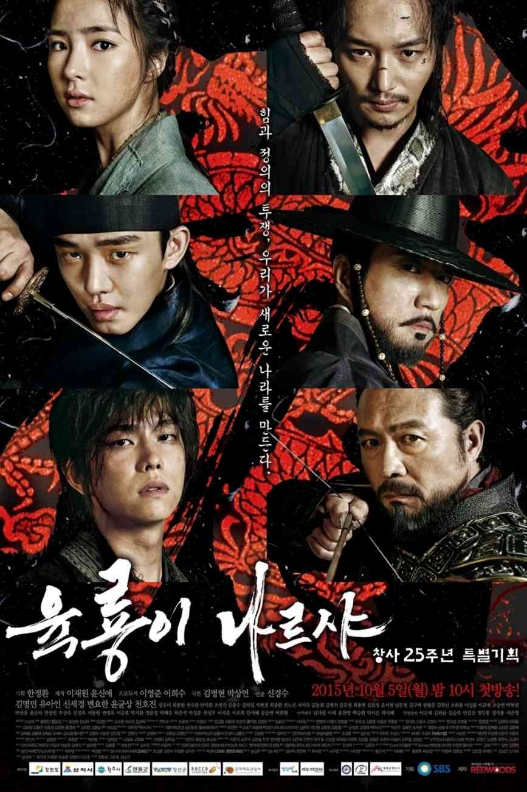
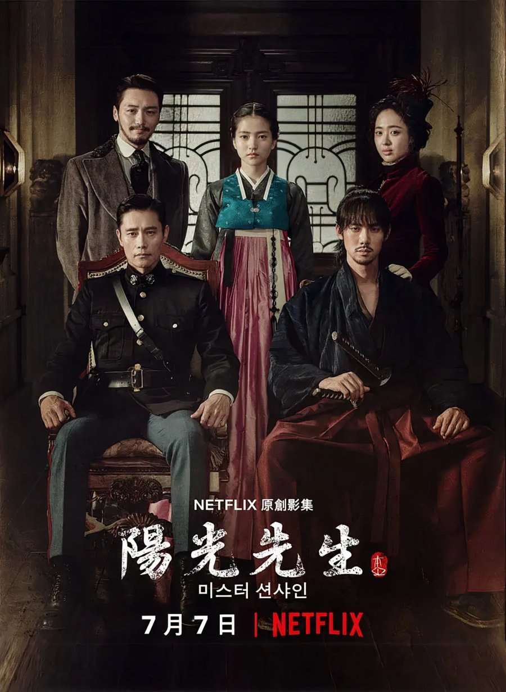
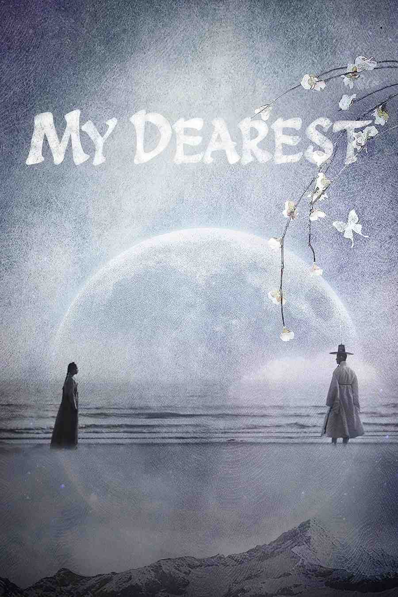
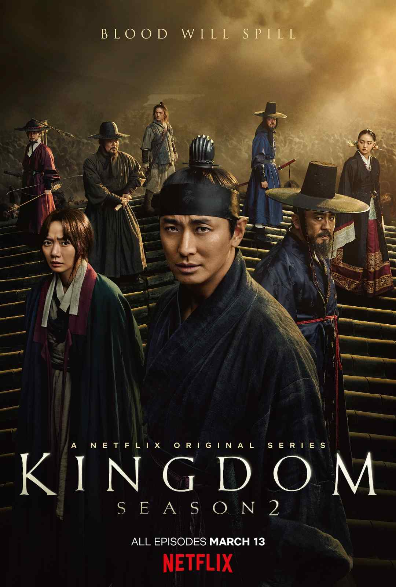
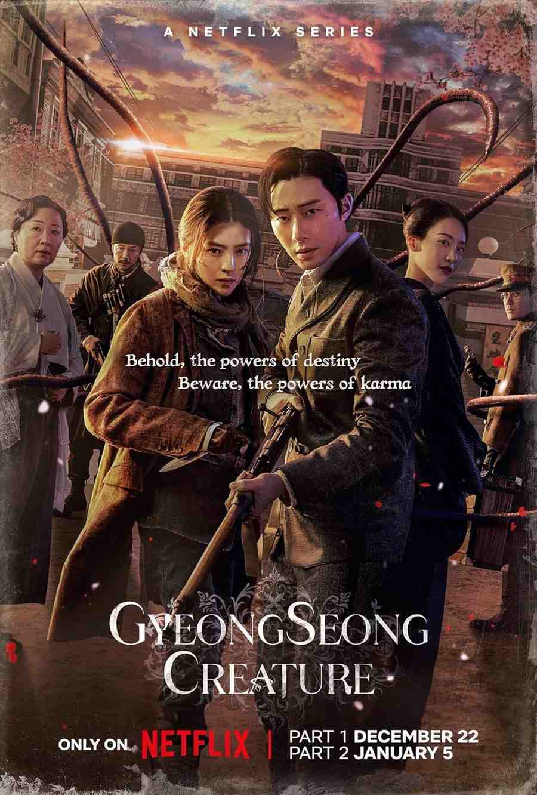
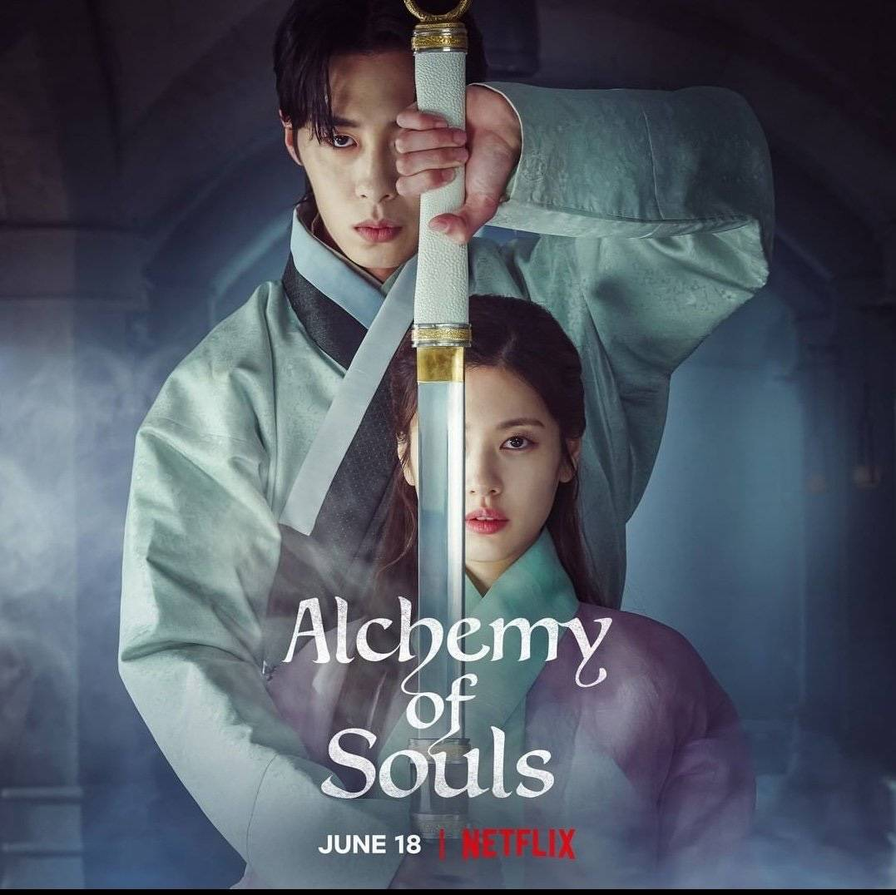
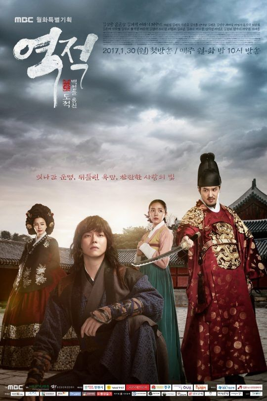

I’ll be honest, the first time I saw “50 episodes” attached to a historical drama, I almost closed the tab. Fifty hours of anything feels like a commitment I’m not ready for. It’s usually the territory of dusty textbooks and endless scenes of old men in tall hats arguing about grain taxes. I usually prefer my dramas fast, punchy, and over in sixteen hours. I like when a show knows what it is and doesn’t wander. So yes, I went into Six Flying Dragons expecting respectability, not obsession.
But Six Flying Dragons is the show that made me eat my words. It doesn’t feel like a long drama. It feels like a 50-hour heist movie where the prize is an entire country. Every episode has a clear target. Every plan has consequences. Every alliance has a price. The show understands something that a lot of long dramas forget. If you keep raising the stakes and you keep paying off what you set up, time stops feeling like time.
The story covers the fall of the Goryeo dynasty and the birth of Joseon. But forget history class for a moment. At its core, this is about people staring at a rotten system and deciding whether they will fix it, exploit it, or burn it down. The “dragons” are not saints. They are ambitious, wounded, hungry, and intelligent. That is why it works. It never asks you to clap for righteousness. It asks you to watch power being built, brick by brick, and then asks what that building does to the builders.
Yoo Ah-in plays Lee Bang-won, and watching his transformation is one of the most intense journeys I’ve had with a TV character. He starts with ideals. He wants change. He wants a better world. But the moment he learns that “better world” requires compromise, he starts sharpening into something colder. He becomes calculating. He becomes terrifyingly efficient. The show doesn’t try to make you like him. It forces you to understand him, and that is more dangerous. You will find yourself rooting for him while also quietly realizing you would not want him anywhere near your life.
Then there’s the action. Usually, in long historical dramas, sword fights can feel like padding. Not here. The choreography is cinematic and heavy. It has weight. It has impact. You can feel the stamina being spent. Every time Dang-sae draws his blade, you feel the room tighten. And what makes the violence meaningful is that it is tied to decisions. A fight is rarely “just a fight.” It is a message. It is a consequence. It is a political move with blood on it.
The pacing is what shocked me most. It never drags. Every betrayal lands because it was earned. Every alliance is built with logic. You see the intellectual chess match between the genius architect Sambong and the ambitious Bang-won, and it is as thrilling as any physical battle. The show respects your intelligence. It doesn’t simplify the moral mess. By the end, I wasn’t just watching a history lesson. I was watching a tragedy about the loneliness of power, and the terrifying idea that the people who change the world are often the people who can live with what it costs.
If you usually find historical dramas too “palace-y”, meaning a lot of bowing, whispering, and long corridors of politics, then Song of the Bandits is the reset button. This is not a traditional sageuk. This is a Korean Western. Guns, horses, dusty standoffs, and that tense silence right before violence breaks. The setting is the 1920s, during the Japanese occupation of Korea, but the tone is closer to an action adventure than a lecture.
I went in expecting an independence movement story that might be heavy or overly sentimental. Instead, the show has a completely different energy. It is gritty, stylish, and filmed with a confidence that feels modern. The location is Gando, a lawless borderland where power is up for grabs. The Japanese military wants control, local forces want survival, criminals want profit, and refugees just want to exist without being crushed. That tension makes the world feel alive because everyone has a reason to be dangerous.
The story follows Lee Yoon, played by Kim Nam-gil, a former soldier for the Japanese empire carrying a massive amount of guilt. That guilt is not a cute character trait. It is the thing that shapes how he moves and how he fights. He goes to Gando looking for something like atonement and ends up becoming the center of a chaotic found-family team. Kim Nam-gil sells the “man of few words” vibe perfectly. He can stand still and still feel like he is making a decision. And when he finally acts, it is clean and brutal.
What I love is that the show doesn’t pretend it is “important” in a boring way. It understands that audiences show up for momentum. So it gives you set pieces. Shootouts in dusty streets. Chases across open land. Ambushes. Tight close-quarter fights. The action is not random, it is story-driven, and it keeps the episodes moving. There is also a standout character, Eon-nyeon, a young contract killer who steals every scene. Her presence adds unpredictability. You never know if she will save someone, betray someone, or do something worse just because she can.
And then there is the structure. Only 9 episodes. That matters. If you are tired of the classic 16-episode stretch where the middle slows down, this is a relief. The show gets to the point. The relationships form under pressure. The stakes stay visible. It also has that cool factor that is hard to fake. The soundtrack has a modern kick, the costumes feel worn-in, and the world feels rough. You are not watching polished royalty. You are watching people on the edge of the map trying to protect what little they have.
Song of the Bandits is not trying to be a philosophical dissertation. It is about survival, loyalty, and what it means to choose a side when every side is dirty. It is stylish, violent, and weirdly fun even when it is tense. If you want a historical drama that feels like an action movie you can binge in a weekend, start here.

I avoided Mr. Sunshine at first because the hype was so loud that I assumed it could not possibly live up to it. Also, the setting sounds like guaranteed heartbreak. Early 1900s Korea, foreign powers circling, occupation tightening, lives being crushed. It felt like signing up for emotional damage on purpose. I kept telling myself I would watch it later, maybe when I felt “ready.”
Then I finally hit play, and within twenty minutes I realized I wasn’t just watching a drama. I was watching craft. Mr. Sunshine is one of the most visually stunning things I have ever seen on screen. Every frame looks deliberate. The lighting, the compositions, the costumes, the way the camera lingers on quiet moments. It is beautiful, but it is not beauty for beauty’s sake. The visuals support the story, and the story is built on characters who feel painfully human.
The drama follows Eugene Choi, a man who escaped slavery in Korea as a child, fled to America, and returns as a U.S. Marine Captain. He does not come back out of love for his homeland. He comes back with distance, bitterness, and a complicated relationship to the country that harmed him. Then he meets Go Ae-shin, a noblewoman who is secretly a sniper for the Righteous Army. She is not written like a fragile heroine waiting to be rescued. She is committed. She is disciplined. She is brave in a quiet, steady way that makes other characters look small.
Yes, there is romance, and it is slow-burn and poetic. But what makes Mr. Sunshine special is that it does not reduce itself to “who ends up with who.” The emotional spine is the way people love in impossible conditions. Love for a person, love for a country, love for an idea of dignity. The drama also gives you a trio of men that turns a typical love triangle into something richer. Eugene, Gu Dong-mae, and Kim Hui-seong all love the same woman, but instead of petty jealousy, you get tension, reluctant respect, humor, and eventually a bond that hurts to watch because you know it cannot end cleanly.
The writing is sharp. The dialogue has weight. The humor lands because it is earned. The sadness hits because it was built properly. The show takes its time, but it is not boring. It uses quiet scenes to deepen character, not to stall. When violence arrives, it is not just spectacle. It is consequence. People pay for what they choose, and the drama never pretends otherwise.
By the end, Mr. Sunshine feels like you lived with these characters. You will probably finish it and sit in silence for a while. Not because you are confused, but because the story makes you feel the cost of history through people you came to care about. If you want a historical drama that feels like cinema and feels emotionally adult, this is the one.

If you are looking for a story that feels massive, the kind of epic that spans years, borders, and the psychological wreckage of war, My Dearest is the gold standard. It is set during the Qing invasion of Joseon in the 1630s, a time of brutal upheaval, but it never turns into a dry history summary. It stays focused on the human cost. What happens to love when the world keeps interrupting it. What happens to identity when survival becomes the only skill that matters.
The drama begins with an almost deceptive lightness. You meet Lee Jang-hyun, a mysterious man with a flirtatious ease and a reputation that makes people curious. You meet Yoo Gil-chae, a spoiled noblewoman who is used to attention and social games. Early on, it can feel like a charming romance setup. Village dynamics. Pride. Jealousy. Little humiliations that feel small and personal. Then the war hits, and the show changes shape completely.
What makes My Dearest stand out is how it depicts war as a machine that grinds everyone down, not just soldiers. You see refugees. Hunger. Families separated. Bodies treated like numbers. People forced to bargain with their dignity. The writing does not glamorize suffering, but it also does not sanitize it. The fear feels specific, and the desperation feels real. It is the kind of drama where you understand why characters do things you wish they did not do.
Gil-chae’s character arc is one of the best parts. She starts privileged and careless, not evil, just sheltered. When the world collapses, she changes. She learns practical survival. She learns when to speak and when to stay silent. She learns how to protect people, not with swords, but with choices. Her transformation never feels like a sudden personality flip. It feels like someone growing up under pressure. That is why it hits. It respects the way trauma reshapes a person slowly.
The romance is intense, but it is not “cute.” It is yearning. It is missed timing. It is letters that do not arrive. It is years passing with a single thought staying constant. Namkoong Min plays Jang-hyun with a beautiful mix of weariness and devotion. He looks like someone who has seen too much and is still choosing to care anyway. Their chemistry works because it is built through survival moments, not just eye contact in pretty clothes.
Visually, the drama is sweeping. Snowy mountain passes. Chaotic markets. Vast landscapes that make the characters look small. But it never loses intimacy. It knows when to zoom in on a quiet reunion, a small touch, a glance that says “I thought you were dead.” My Dearest is the kind of drama that asks for your full attention. If you give it that attention, it pays you back with something that feels like a literary epic you can feel in your chest.

Bossam: Steal the Fate is the kind of drama that looks like a standard serious sageuk if you only see the poster, but the actual story has a weird, specific hook that makes it feel fresh. It is built around a real custom called bossam, where a widow could be wrapped in a blanket at night and “kidnapped” to be remarried. It sounds ridiculous, and that is exactly why it is interesting. The drama takes that strange social loophole and uses it to talk about women’s lives, class, and the way people get trapped by rules that were never designed for their happiness.
The story begins when Ba-woo, a rough, street-smart man who does bossam kidnappings for money, grabs the wrong person. He thinks he is taking a widow for a job. Instead, he accidentally abducts Princess Soo-kyung, the widowed daughter of the King. Now he is holding someone who is supposed to be untouchable, and the palace can’t admit she is missing without scandal. That twist instantly creates tension. Everyone is hiding something, and the consequences are deadly.
What makes the drama addictive is the emotional center. It becomes a found family story. Ba-woo is not a polished noble hero. He is a single dad trying to survive. His son Cha-dol is not a side prop. He is part of the heart. When the Princess is forced into their world, you get this quiet domesticity that feels surprisingly warm. They fix up spaces. They share meals. They learn each other’s rhythms. The Princess has to learn practical skills, and Ba-woo has to learn that protecting someone can be a choice, not just a job.
Jung Il-woo plays Ba-woo with grit and softness. You can believe he has lived a hard life, but you can also see the human underneath it. Yuri plays the Princess with dignity and restraint. She is not written as a “badass sword girl,” but she is mentally strong. She reads rooms. She understands politics. She refuses to let men decide her entire future. That quiet strength is more interesting than noisy heroism because it feels real in the context of the era.
Yes, the drama does lean into palace politics later. Secrets surface. Power struggles widen. Some viewers find the second half heavier. But the reason it still works is because the relationships are already built. You care about the trio, and the politics becomes a threat to something you value. The romance is slow and mature. It is built on trust and shared survival, not grand declarations. If you want a historical drama that feels like a hidden gem and gives you warmth inside the chaos, Bossam is a great pick.

Gyeongseong Creature is the easiest recommendation for people who say, “I can’t do historical dramas, I need something with a hook.” Because the hook here is immediate. Colonial-era Seoul, noir-ish atmosphere, secret experiments, and a monster that is not just a random CGI problem. If you drop a 1940s detective thriller into the middle of a survival horror game, you get the vibe. It is tense, stylish, and designed for binge watching.
The setting is 1945 Gyeongseong, which is what Seoul was called during the Japanese occupation. The city feels like it is holding its breath. People are scared, information is controlled, and cruelty is normalized. Park Seo-joon plays Jang Tae-sang, a wealthy pawnshop owner with a reputation and connections. He acts selfish, and sometimes he is selfish, but he has that classic “I pretend I don’t care” mask that cracks when things get real. When he is blackmailed into finding a missing person, he crosses paths with Chae-ok, played by Han So-hee, a specialist in finding people who don’t want to be found.
The real story begins when they infiltrate a military hospital that is not really a hospital. It is a lab. It is a prison. It is a place where human beings are treated like materials. This is where the creature element comes in, and it is the best part of the show’s horror. The monster is not just a jump scare machine. It is tragic. It is connected to the cruelty of the era. That makes the fear sharper, because the horror is not only “something is chasing us.” The horror is “human beings made this.”
The chemistry between the leads is urgent. It is not soft romance. It is the bond you form when you might die together. Park Seo-joon brings charm and quick thinking, while Han So-hee brings intensity and grit. Their teamwork feels earned because they are constantly making choices under pressure. There are also supporting characters who add weight, including people trapped in the system and people benefiting from it. The show does not let you forget that the true villains are often the ones wearing uniforms and signing papers.
Visually, it looks expensive. The sets are detailed, the period styling is sharp, and the hospital feels like a suffocating maze. It does get gory at times, so if you are squeamish, be warned. Also, like many Netflix series, the middle can stretch a little. But the tension stays high, and the emotional payoff hits because the story is not only about survival. It is about humanity. If you want a historical drama that feels modern, fast, and genre-driven, this one is a strong entry point.

Alchemy of Souls is for people who want historical vibes without the pressure of real history. It is not Joseon politics. It is not a “based on true events” story. It is a fully fictional world called Daeho that borrows the aesthetic of historical dramas and mixes it with magic, martial arts, and modern pacing. That makes it beginner-friendly because you never feel like you are missing context. You learn the world as the characters do, and the show keeps it entertaining while it explains itself.
The story begins with Naksu, a legendary assassin being hunted. To escape, she uses forbidden magic called the Alchemy of Souls, shifting her soul into another body. The spell goes wrong, and instead of ending up in a powerful body, she lands inside Mu-deok, a physically weak servant girl who can barely hold a sword. That twist is the engine of the story. The deadliest person in the room is trapped inside the weakest body, and she is furious about it.
Enter Jang Uk, a nobleman from a powerful mage family whose “gate of energy” was sealed at birth. He is talented, but blocked. He is ambitious, but treated like a problem. When he realizes who Mu-deok truly is, he makes a deal. She will train him in combat and survival, and he will protect her from the people trying to kill her. The relationship becomes a teacher-student dynamic filled with banter, manipulation, loyalty, and slow emotional shifts. It is fun because both characters are stubborn, and neither one wants to admit they care.
The show’s strength is balance. It has romance, but it also has comedy that actually works. It has action, but the fights are tied to character growth. It has politics, but the politics are easy to follow because the show keeps the focus on clear goals. There are great side characters too, including the “Four Seasons,” heirs of major families whose friendships and rivalries add flavor. There is also the horror-adjacent element of soul-shifters who lose control and turn into stone-like monsters, which keeps stakes alive beyond romance.
Visually, it is top-tier. The magic effects are polished, especially the water-based techniques. The costumes and sets are lush without feeling heavy. The pacing is modern, and the episodes end with strong “one more” energy. When the story expands, it grows from personal survival into something bigger about power, destiny, and consequences. If you want the fun parts of historical fantasy, swords, clans, forbidden techniques, and emotional bonds, without needing to remember royal family trees, Alchemy of Souls is an easy yes.

I used to think the “Robin Hood” idea was played out. Steal from the rich, give to the poor, fight a bad king, save the people. It can feel predictable if the story is only built on the trope. The Rebel takes that familiar setup and turns it into something emotional and grounded. It is not just about rebellion. It is about the weight of being born low in a world designed to keep you low, and what it does to a family when they try to climb out.
One of the smartest choices the drama makes is starting with the father, Amogae, not the hero. Amogae is a slave, treated like property, and he decides he has had enough. He builds an underground empire to buy freedom for his family, and watching him do that is gripping. It is not a clean hero journey. It is messy, desperate, and full of hard decisions. That is why it hits. You understand the cost before the “legend” even begins.
Then you meet Gil-dong, the son, who is born with unusual physical strength. In Joseon, being a low-born child with that kind of power is seen as dangerous. He spends years trying to hide, trying to live quietly, trying to avoid attention. But the King Yeonsangun descends into tyranny, and the suffering becomes too loud to ignore. Gil-dong doesn’t wake up one day and decide to be a revolutionary for fun. He is pushed into it by injustice and by the pain of watching people he loves get crushed.
The drama also nails the “crew” dynamic. The Hong Clan is a ragtag brotherhood that gives the story humor and warmth. They are not polished warriors. They are smugglers, thieves, survivors. They joke, they fight, they protect each other, and their bond becomes the emotional glue that makes the rebellion feel like a community, not a lone hero fantasy. There is romance too, but it is supportive. The female lead is not just a prize. She has her own strength, her own bravery, and her choices matter.
Pacing matters here. It is 30 episodes, but it moves. It does not feel like endless filler because the drama keeps tying personal stakes to political stakes. When a victory happens, you feel it. When a tragedy hits, it hurts because you saw the family build their hope. The Rebel is the kind of drama that makes you cheer for the underdog, but it also makes you think about what people become when they are forced to fight for dignity. If you want a historical that is emotional, action-driven, and built on family rather than palace romance, this is a strong pick.

If the words “historical drama” make you think of slow ceremonies and endless royal lineage talk, Kingdom is the show that breaks that stereotype in the first episode. It takes Joseon-era palace politics and injects a fast zombie outbreak into the middle of it. It sounds wild, but it works because the show treats both genres seriously. The politics are real and tense. The horror is sharp and brutal. The blend feels intentional, not gimmicky.
The story begins with a cover-up. The King has fallen ill, officially with “smallpox,” and the powerful Haewon Cho clan has locked down access to him. Even the Crown Prince is blocked. Rumors spread. Is the King dead. Is something worse happening. The Crown Prince Lee Chang goes from political danger to physical danger quickly, and his investigation drags him out of the palace and into villages where the truth is impossible to hide.
What makes Kingdom special is that the zombies are not just monsters. They are part of a system. The outbreak is tied to hunger, class, and greed. The peasants are starving. The nobles are obsessed with control. The show keeps showing you the gap between those worlds, and then the outbreak makes that gap lethal. The undead move fast, they are terrifying, and the “hibernation” mechanic adds strategy. Day and night matter. Temperature matters. Supplies matter. It becomes a survival thriller with brains.
The cast is strong. Ju Ji-hoon plays the Crown Prince as someone learning leadership the hard way. Bae Doona plays a physician fighting to understand the plague scientifically, which gives the story intelligence, not just panic. Heo Joon-ho brings gravitas as a powerful figure who knows more than he admits. The supporting characters are not filler either. People you meet in the provinces have their own goals, fears, and choices. That makes the world feel real, which makes the horror hit harder.
Also, the format helps. Shorter seasons, high production value, and almost zero filler. The cinematography is beautiful and cruel at the same time. Elegant architecture and silk robes on one side, bodies and blood on the other. It keeps your attention because every episode ends with genuine momentum. Kingdom is a horror thriller, but it is also a political story about what leaders owe their people. If you want a historical drama that feels modern, intense, and impossible to binge slowly, this is the definitive gateway.